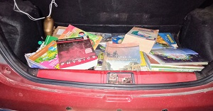

Sign in
booksforsociety.com - Changing lives, one book at a time.
Here's how you donate:
1. You fill out a simple form to donate books.
2. A driver is assigned to you, whom you can track in real time.
3. The driver picks up the books.
Then, we store your donated books to distribute to NGOs:
Note: We blur images with children in them to protect their privacy.
Our Mission:
We started in 2016 with a single goal in mind: To make donating books as simple and quick as possible.
Our aim is to eliminate the number one reason why people fail to donate books: inconvenience. That is why, we built this website to make it possible for you to donate books while sitting in the comfort and convenience of your home.